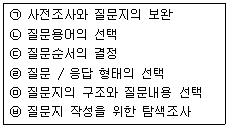
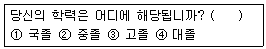
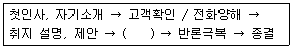

텔레마케팅관리사 (2006-03-05 기출문제)
1과목: 판매관리
1. 가장 중요한 텔레마케팅의 요소는 무엇인가?
- 컴퓨터가 아닌 사람이 직접 전화함
- 과거에 접촉했던 회사와의 좋았던 경험
- 제품과 서비스에 대한 관심
- 텔레마케터의 전문성과 친절함
(정답률: 알수없음)

2. 자사의 제품을 적당한 장소에서 소비자가 편리하게 구매할 수 있도록 서비스 체계를 갖춘다는 의미의 마케팅 요소는?
- Product
- Place
- Promotion
- Price
(정답률: 알수없음)
3. 잠재고객 접촉(Approach)시의 적절한 행위가 아닌 것은?
- 잠재고객의 이름, 나이, 직업 등을 미리 알아둔다.
- 잠재고객이 우리 제품을 살 능력이 있는지 알아본다.
- 잠재고객의 가족 관계에 대하여 사전 지식을 갖는다.
- 판매원의 시간을 절약할 수 있도록 방문시간은 판매원이 편리한 시간으로 정한다.
(정답률: 알수없음)
4. 콜센터 매니저가 갖추어야 할 능력에 대한 설명과 관계가 먼 것은?
- 고객니즈의 간파는 고객에 대한 상황파악의 출발점이다.
- 인바운드 고객상황대응능력 제고
- 고객의 심리전술
- 고객 재발견
(정답률: 알수없음)
5. 축적된 고객관련 데이터에 숨겨진 규칙이나 패턴을 찾아내는 것을 무엇이라 하는 가?
- DBMS
- 데이터 마이닝
- 필터링
- CRM
(정답률: 알수없음)
6. 아웃바운드 텔레마케팅에서 전용상품을 개발할 경우 고려해야 할 사항이 아닌 것은?
- 신뢰성
- 사후 관리성
- 상담의 효율성
- 거래조건 변동의 최대화
(정답률: 알수없음)
7. e-CRM상에서 고객유지를 위한 전략으로 맞지 않는 것은?
- 주문에 대한 신속하고 정확한 대응
- 품질이 낮아도 저렴한 제품의 대량공급
- 배송 등 철저한 사후관리
- 기술적인 지원체제 구축
(정답률: 알수없음)
8. 데이터베이스 마케팅에서 사용되는 RFM의 세 가지 기준이 아닌 것은?
- 얼마나 오랫동안 우리와 거래했는가?
- 얼마나 최근에 우리 제품을 구매했는가?
- 얼마나 자주 우리 제품을 구입하는가?
- 우리 제품의 구입에 어느 정도의 돈을 쓰는가?
(정답률: 알수없음)
9. 아웃바운드 텔레마케팅에서 잠재고객을 구매고객으로 전환시키는 방법으로 볼 수 없는 것은?
- 고객을 이해시키고 실질적 혜택 부여
- 무조건 가격할인을 통한 유도
- 관심이 많은 고객을 집중적으로 설득
- 쌍방간 커뮤니케이션 강화
(정답률: 알수없음)
10. 제품이 생산자에서 소비자에게 직접 판매되지 않고 중간상인을 거쳐 소비자에게 도달하는 경우가 있다. 그 이유는 무엇인가?
- 소비자가 지역적으로 집중되어 있으므로
- 일반 대중 소비자에게 판매하게 됨으로
- 비싼 제품이기 때문에
- 제품에 대한 기술적 지식과 서비스가 필요하기 때문에
(정답률: 알수없음)
11. 광고의 직접적인 반응 척도로 적합하지 않은 것은?
- 도달률(Reach)
- 도달빈도(Frequency)
- 강도(Impact)
- 선호도(Preference)
(정답률: 알수없음)
12. 데이터베이스 마케팅의 정의로 올바른 것은?
- 관청, 회사, 공장, 호텔 등의 사업장에서 구내의 내선 전화기 상호간 또는 내선전화기와 국선 간의 교환접속을 해주는 것이다.
- 고객정보와 거래정보 파일을 결합하여 이를 데이터베이스화함으로써 경쟁회사와는 다른 차별적인 관리를 추구하는 마케팅 기법이다.
- 데이터를 정보 분석 과정을 거쳐 경영전략을 지원하는 정보를 추출하는 기법이다.
- 정리되어 투입된 데이터가 모여 있는 주 데이터파일을 말한다.
(정답률: 알수없음)
13. 포지셔닝(Positioning)에 관한 설명 중 틀린 것은?
- 포지셔닝이란 기업이 시장 세분화를 기초로 정해진 표적시장 내에 고객들의 마음속에 시장분석, 고객분석, 경쟁분석 등을 기초로 하여 전략적 위치를 계획하는 것이다.
- 포지셔닝 맵이란 소비자의 마음속에 내재해 있는 자사제품과 경쟁회사 제품들의 위치를 2차원 또는 3차원의 도면으로 작성한 것이다.
- 포지셔닝 전략의 수립 절차는 경쟁제품의 포지션 분석 → 자사 제품과 포지셔닝 개발 → 소비자 분석 및 경쟁자 확인 → 포지션의 확인 → 재 포지셔닝의 단계를 거친다.
- 포지셔닝 맵은 크게 제품 위주의 포지셔닝 맵과 소비자의 지각을 통해 작성하는 인지도가 있다.
(정답률: 알수없음)
14. 생산자와 재판매업자가 광고와 인적판매를 많이 해야하는 소비재의 유형에 해당하는 것은?
- 편의품
- 선매품
- 전문품
- 비탐색품
(정답률: 알수없음)
15. 해피콜에 대한 설명으로 옳지 않은 것은?
- 고객과의 관계 개선을 통해 추가판매를 유도하고 고객만족도를 높여 충성 고객화한다.
- 감사전화, 서비스 만족확인 전화, 캠페인 지지전화 등이 이에 속한다.
- 해피콜의 지속적인 운영관리를 위해 대상 데이터베이스를 유지하도록 한다.
- 해피콜은 소비자와의 최종 커뮤니케이션 단계로 해피콜 이후의 조치사항은 특별히 필요 없다.
(정답률: 알수없음)
16. 텔레마케팅과 전화판매를 비교한 것이다. 잘못 연결된 것은?
- [목표] 텔레마케팅 - 다양한 마케팅 활동 전화판매 - 제품이나 서비스 판매
- [메시지] 텔레마케팅 - 구조화된 스크립트 사용 전화판매 - 판매원 개별적 접촉
- [매체] 텔레마케팅 - 타 매체와의 최적화 결합 전화판매 - 주로 전화사용(간혹 우편으로 사후처리)
- [측정 및 검증가능성] 텔레마케팅 - 가능 전화판매 - 가능
(정답률: 알수없음)
17. 다음 중 질문을 전달하는 방법에 따른 설문서의 종류에 속하지 않는 것은?
- 도형설문서
- 개인면접설문서
- 전화설문서
- 우편설문서
(정답률: 알수없음)
18. CRM을 위한 데이터베이스 상에서 가장 중요하다고 구분되는 고객은 무엇인가?
- 신규고객
- 기존고객
- 잠재고객
- 가망고객
(정답률: 알수없음)
19. 회사가 제품에 대한 가격을 결정할 때 제품의 저가전략이 적합한 경우가 아닌 것은?
- 시장수요의 가격탄력성이 낮을 때
- 경쟁기업에 비해 원가우위를 확보하고 있을 때
- 경쟁사가 많을 때
- 소비자들의 수요를 자극하고자 할 때
(정답률: 알수없음)
20. 고객생애가치(Life Time Value)와 가장 관계가 깊은 것은 무엇인가?
- Renewal(갱신)
- CRM(고객관계관리)
- Up - sale(고가판매)
- Cross - sale(교차판매)
(정답률: 알수없음)
21. 다음 중 아웃바운드 텔레마케팅의 성공요소로 볼 수 없는 것은?
- 텔레마케팅 전용상품과 서비스의 개발
- 아웃바운드 텔레마케팅 시스템 구축
- 스크립트의 다양한 활용
- 새로운 인력의 선발을 통한 지속적인 업무교체
(정답률: 알수없음)
22. 다음 중 면접절차 내용과 거리가 먼 것은?
- 각 질문을 정확히 그대로 발음할 것
- 질문서 상에 기재된 모든 것을 알려줄 것
- 순서에 상관없이 질문할 것
- 질문태도는 대화를 나누는 식으로 할 것
(정답률: 알수없음)
23. 인텔리전트 콜 블렌딩은 콜 량의 변화에 대응하기 위한 것으로 상담원이 아닌 콜을 이동시키는 것이다. 인텔리전트 콜 블렌딩에 대한 설명이 잘못된 것은?
- 콜 패턴이 불규칙적인 콜센터에서 유용하다.
- 모든 ACD와 전화 연결을 할 수 있다.
- CTI링크가 필요하다.
- 아웃바운드 상담원 풀에서 인바운드 콜을 받을 수 있다.
(정답률: 알수없음)
24. 아웃바운드 텔레마케팅을 시도할 때의 유의사항으로 적절하지 않은 것은?
- 고객에게 전화를 건 목적과 이유를 먼저 말하면 콜이 중단될 우려가 많으므로 일단 홍보 후 그 이유를 설명하는 것이 바람직하다.
- 고객은 이익에 민감하므로 콜을 경청하면 틀림없이 이익을 얻을 수 있다는 확신을 주는 것이 중요하다.
- 제품이나 서비스에 대한 설명시 주가 되는 상품을 먼저 소개하고 다음에 부수적인 상품을 소개하는 것이 좋다.
- 구매 등의 행동을 도출시켜야 한다.
(정답률: 알수없음)
25. 데이터베이스의 설계시 고려되어야 할 사항이 아닌 것은?
- 장기적인 비전
- 통합성
- 유연성
- 즉시성
(정답률: 알수없음)
2과목: 시장조사
26. 우편조사에 대한 설명 중 틀린 것은?
- 응답요령이 상세하게 설명되어 있는 구조화된 설문지를 우편으로 조사대상자에게 발송하고 응답하여 반송하도록 하는 조사방법
- 농어촌처럼 지리적으로 거리가 먼, 광범위하게 분산되어 있는 경우에 경제적으로 조사를 할 수 있고, 많은 양의 질문을 할 수 있다.
- 우편조사의 가장 큰 장점은 반송률이 높다는 것이다. 조사자들이 시간을 두고 설문에 자세히 응답할 수 있기 때문이다.
- 우편조사방법은 면접방식으로 응답하기 곤란한 사적인 내용에 대한 조사시 용이하다.
(정답률: 알수없음)
27. 변인에 대한 설명으로 옳지 않은 것은?
- 독립변인 - 인과관계를 분석할 목적으로 수행되는 연구에서 원인이 되는 변인
- 중재변인 - 독립변인과 종속변인의 관계에서 직접적인 인과관계가 아닌 제3변인의 효과를 포함하는 경우의 제3변인
- 잠재변인 - 독립변인 이외에 종속변인에 영향을 주는 모든 변인
- 관찰변인 - 조작적 정의에 따라 관찰가능하고 측정 가능한 실체가 있는 변인
(정답률: 알수없음)
28. 전화조사시 고려하여야 할 사항으로 옳지 않은 것은?
- 조사시간대는 응답자가 불편을 느끼지 않는 평일 오전이나 오후가 적당하다.
- 전화조사에 적당한 시간은 10분 내외로 10개 전후의 문항으로 한다.
- 전화조사시 질문은 질문지와 최대한 유사하게 질문하며 질문지에 나타난 순서대로 질문 한다.
- 조사원은 조사대상자의 답변을 그대로 기록하기 보다는 적절히 요약, 정리, 의역, 또는 부연 설명할 수 있다.
(정답률: 알수없음)
29. 시장조사는 필요한 정보를 획득하고 이용하는 과학적인 절차로 볼 수 있다. 현대 기업이 지향해야 하는 시장조사의 궁극적 목표와 가장 가까운 것은?
- 이윤극대화
- 고객만족
- 생산자와 조직의 이익
- 시장의 확대
(정답률: 알수없음)
30. FGI(Focus Group Interview)조사 방법에 대한 설명으로 올바른 것은?
- 면접 조사의 한 방법이다.
- 연령별, 지역별로 실시하는 전화 조사의 한 방법이다.
- 표적 집단과 관계없이 불특정 다수를 대상으로 하는 조사 방법이다.
- 표적 집단에 대한 전화 조사의 한 방법이다.
(정답률: 알수없음)
31. 연구의 유형에 대한 설명으로 적절하지 않은 것은?
- 탐색연구 - 연구대상의 적합성을 판단하기 위한 연구
- 기술연구 - 현상에 대한 특성을 파악하기 위한 연구
- 설명연구 - 변인들의 인과관계를 설명하는 연구
- 예측연구 - 표본의 대표성을 평가하는 연구
(정답률: 알수없음)
32. 사전조사에 대한 정의가 올바른 것은?
- 조사계획의 타당성을 테스트하는 사전탐색적 성격을 띠고 있으며 설문지 작성 전의 탐색 과정이다.
- 일단 설문지를 작성한 후에 설문지 작성과정에서 발생한 오류를 체크하기 위한 조사이다.
- 설문지를 종합적으로 수정, 보완하여 실사단계에서 진행되는 조사이다.
- 수거된 질문지를 임의적, 무작위로 10 ~ 20% 정도 표본 추출하여 진정으로 응답을 해준 사실이 있는지의 여부를 조사하는 것이다.
(정답률: 알수없음)
33. 전화조사와 거리가 먼 것은?
- 질문 문항의 수가 적고 간단한 것이 적당하다.
- 전화번호부를 이용하여 비교적 쉽고 정확하게 모집단의 표본을 추출할 수 있다.
- 비교적 쉽게 응답자와 접촉할 수 있다.
- 익명이 요구되는 민감한 질문에 이용하면 효과가 있다.
(정답률: 알수없음)
34. 다음 질문지 작성 단계를 바르게 나열한 것은?

- ㉠ - ㉡ - ㉢ - ㉣ - ㉤ - ㉥
- ㉣ - ㉡ - ㉢ - ㉠ - ㉤ - ㉥
- ㉥ - ㉤ - ㉣ - ㉢ - ㉡ - ㉠
- ㉢ - ㉣ - ㉠ - ㉡ - ㉤ - ㉥
(정답률: 39%)
35. 전화조사를 위한 질문지 설계방법으로 옳지 않은 것은?
- 갑작스러운 전화에 불쾌하지 않도록 부드럽고 정중한 표현을 구사하는 스크립트를 개발 한다.
- 4~5개 이상의 비슷한 예를 들고 그 중 하나를 선택하도록 설계한다.
- 다른 조사방법에 비하여 비교적 응답시간이 짧기 때문에 가능하면 주관식 질문은 줄이는 것이 좋다.
- 양자택일형을 통해 구체적으로 답변할 수 있도록 설계한다.
(정답률: 알수없음)
36. 세부적인 마케팅 믹스 방안이 아닌 것은?
- 최적 상품의 설계
- 소비자의 라이프스타일
- 상품의 소구점 파악
- 원가 분석
(정답률: 알수없음)
37. 시장조사의 3가지 기본 요소가 아닌 것은?
- 조사문제
- 가설의 개발
- 조사설계
- 조사대상의 범위
(정답률: 10%)
38. 질문지 문항의 순서결정 방법과 거리가 먼 것은?
- 구체적인 질문에서부터 일반적인 질문으로 한다.
- 주제에 대한 오리엔테이션을 위한 개방형 질문을 먼저한다.
- 쉽고 흥미를 끌 수 있는 질문부터 시작한다.
- 동일한 주제의 경우 단순한 질문에서 복잡한 질문으로 진행한다.
(정답률: 알수없음)
39. 질문에 대한 응답유형과 거리가 먼 것은?
- 자유응답형
- 다지선다형
- 양자택일형
- 가치응답형
(정답률: 알수없음)
40. 전화조사로 자료를 수집할 때 조사에 잘 응해 주는 사람을 대상으로 조사를 진행하였다. 이 경우 어떤 집단의 의견이 과다하게 포함되는 문제가 발생하겠는가?
- 학생집단
- 교육수준이 높은 집단
- 60세 이상의 연령집단
- 사무직 남자집단
(정답률: 알수없음)
41. 1차 자료에 대한 설명 중 틀린 것은?
- 문제해결을 위해 조사자가 직접 수집하는 자료
- 1차 자료의 수집에는 많은 시간과 비용이 소요되며, 조사방법에 관한 지식과 기술도 필요하다.
- 조사자가 1차 자료를 수집하고자 할 때는 조사 설계와 자료수집 계획을 수립하여 직접 자료를 수집해야 한다.
- 이미 존재하는 자료로서 다른 조사자에 의해 수집된 공개자료를 말한다.
(정답률: 알수없음)
42. 전화조사에서 모집단 형태를 효과적으로 설정하기 위한 조건으로 관계가 없는 것은?
- 전화 걸 대상 설정
- 응답자 역할의 구체화
- 직업 등을 고려한 여러 분야에 포괄적 적용 가능
- 인명, 직종의 가나다 순에서의 표본추출
(정답률: 알수없음)
43. 조사원의 요건과 거리가 먼 것은?
- 고졸 이상이어야 한다. 설문 내용의 전문성과 난이도에 따라 대학생이나 대학졸업 이상의 학력이 필요한 경우도 있다.
- 외모는 평범한 것이 좋다. 너무 튀거나 개성이 강해도 좋지 않다.
- 일반적으로 여성보다는 남성이 조사원으로 적합하다.
- 성격이 원만하고 붙임성이 있는 사람이 좋다.
(정답률: 알수없음)
44. 다음과 같은 질문으로 얻은 측정치는 다음 중 어떤 척도에 해당되는가?

- 명목척도
- 서열척도
- 등간척도
- 비율척도
(정답률: 알수없음)
45. 구매 관련 자료 수집을 위한 횡단조사의 조사항목으로 적합하지 않은 것은?
- 고객 개인 정보
- 선호 상표
- 구매 의사
- 상표 및 광고 인지도
(정답률: 알수없음)
46. 공개되어 있는 자료 중에서 필요한 정보를 모으는 가장 기초적인 시장조사 방법은?
- 듣기조사
- 오픈 데이터의 수집
- 관찰조사
- 전화조사
(정답률: 알수없음)
47. 리스트 클리닝의 목적으로 바람직하지 않은 것은?
- 텔레마케팅시 반응이 없는 고객리스트의 클리닝
- 데이터의 보완과 범위 결정
- 상당 기간 경과한 데이터의 폐기
- 전화 대상 데이터의 설정과 리스트 업
(정답률: 알수없음)
48. 고정된 일정수의 표본가구 또는 개인을 선정하여 반복적으로 조사에 활용하는 방법은?
- 소비자패널 조사
- 신디케이트 조사
- 옴니버스 조사
- 가정유치 조사
(정답률: 알수없음)
49. 탐색조사의 종류가 아닌 것은?
- 문헌조사
- 전문가조사
- FGI조사
- 사례조사
(정답률: 알수없음)
50. 조사방법에 대한 설명으로 옳지 않은 것은?
- 면접조사 - 시간소요가 많다.
- 우편조사 - 비용이 저렴하다.
- 전화조사 - 조사과정의 통제가 어렵다.
- 온라인조사 - 표본수를 대량화하기 쉽다.
(정답률: 알수없음)
3과목: 텔레마케팅관리
51. 인바운드 상담원 성과관리 평가 지표가 아닌 것은?
- 평균 통화 처리시간
- 평균 통화 시간
- 평균 거리 시간
- 표준작업일 평균 통화수
(정답률: 알수없음)
52. 모니터링의 목적으로 부적합한 것은?
- 텔레마케터의 교육
- 서비스 품질관리
- 평가결과에 따른 인사조치
- 고객욕구 파악
(정답률: 알수없음)
53. 리더십의 필수 요소가 아닌 것은?
- 장기적인 비전을 고수
- 위험을 회피하기 보다 위험을 감수
- 창조적인 도전 중시
- 방만한 분석
(정답률: 알수없음)
54. 통화품질 개선방안으로 옳은 것은?
- 모니터링 평가결과는 타 콜센터와 비교할 수 없다.
- 모니터링 평가목표를 구체화할 필요가 있다.
- 모니터링 평가자의 자질은 중요하지 않다.
- 모니터링 평가범위를 미리 설정할 필요가 없다.
(정답률: 알수없음)
55. 텔레마케터 지도(Coaching)시 지켜야 할 올바른 태도가 아닌 것은?
- 본격적인 지도 전에 텔레마케터와 친밀감을 형성한다.
- 장점에 대한 칭찬을 곁들이면서 문제점에 대한 지적을 하고 동의를 구한다.
- 문제 지적 사항에 대해 상담원의 답변을 들을 필요는 없다.
- 문제점의 지적과 함께 개선 방안에 대해 제시하거나 토의한다.
(정답률: 알수없음)
56. 콜센터 매니저의 역할로 적합하지 않은 것은?
- 고객리스트 수집 및 평가
- 마케팅 목표 일정, 예산수립 및 관리
- 텔레마케터의 사생활 관리
- 업무절차의 개발 및 마케팅 캠페인
(정답률: 알수없음)
57. 콜센터의 역할 변화를 잘못 설명한 것은?
- 거래보조 수단에서 세일즈 수단으로 변화
- 고객서비스 수단에서 고객의견조사 수단으로 변화
- 이익센터의 개념에서 비용센터의 개념으로 변화
- 고객불만해결 수단에서 고객만족창출 수단으로 변화
(정답률: 알수없음)
58. 텔레마케터에 대한 OJT 방법으로 적절치 않은 것은?
- 기존상담원과 동반근무 실습
- 모니터링을 통한 슈퍼바이저와의 일 대 일 지도
- 우수 상담원의 녹취록을 통한 훈련
- 타 업종의 외부전문가 공개실무강좌에 참가
(정답률: 알수없음)
59. 텔레마케팅의 구성인력에 관한 교육이 잘못 연결된 것은?
- 기술 스태프 - 콜 매니지먼트
- 텔레커뮤니케이터 - 롤프레잉
- 슈퍼바이저 - 텔레커뮤니케이터 관리기법
- QAA - 모니터링 평가 기준 작성법
(정답률: 알수없음)
60. 텔레마케팅의 혜택이 아닌 것은?
- 효율적 비용관리
- 시간억제
- 효율적 통제
- 시장확대
(정답률: 알수없음)
61. 텔레마케팅의 특성에 대한 설명으로 옳지 않은 것은?
- 공중통신망을 이용한 소극적 마케팅이다.
- 데이터베이스마케팅 중심으로 수행한다.
- 시스템과 유기적으로 결합해야 한다.
- 고객의 LTV(Life Time Value)를 존중한다.
(정답률: 알수없음)
62. 업무를 원활하게 하기 위한 OJT 활동에 기본적인 절차로 알맞은 것은?
- 업무의 재고 조사 → 부하직원의 특징파악 → 업무배당 → 실적의 검토평가
- 업무의 재고조사 → 업무배당 → 부하직원의 특징파악 → 실적의 검토평가
- 업무배당 → 업무의 재고조사 → 부하직원의 특징파악 → 실적의 검토평가
- 부하직원의 특징파악 → 업무배당 → 업무의 재고조사 → 실적의 검토평가
(정답률: 알수없음)
63. 텔레마케팅을 적용하기에 알맞지 않은 것은?
- 제품 생산기술
- 신시장 개척
- 유권자 홍보
- 신상품에 대한 관심도 조사
(정답률: 알수없음)
64. 인하우스 텔레마케팅(In House Telemar-keting)이란?
- 텔레마케팅 경험이 없는 경우에 외부에 위탁하여 텔레마케팅 활동을 하는 것
- 자체적으로 텔레마케팅센터를 설치하여 텔레마케팅 활동을 하는 것
- 기업을 소구대상으로 하여 텔레마케팅 활동을 하는 것
- 소비자를 대상으로 텔레마케팅 활동을 하는 것
(정답률: 알수없음)
65. 텔레마케팅을 수행하는 조직의 특성으로 옳지 않은 것은?
- 다양한 기술들의 통합을 위한 관리가 효과적으로 이루어지고 있다.
- 가치를 극대화하기 위한 고객의 행동분석이 효과적으로 이루어지고 있다.
- 텔레마케터의 성과측정이 효과적으로 이루어지고 있다.
- 비용절감을 위한 조직의 역할을 가장 중요하게 여긴다.
(정답률: 알수없음)
66. 효과적인 교육방안이 아닌 것은?
- 실제작업 환경과 같은 교육환경
- OJT 교육 활성화
- 교육결과에 대한 보상
- 상담원 지향적 교육
(정답률: 알수없음)
67. 텔레마케터에게 요구되는 자질과 가장 거리가 먼 것은?
- 정확한 발음과 음성
- 정확한 표현과 구술 능력
- 훌륭한 청취력과 이해심
- 마케팅, 경제관련 상식 등과 법률적, 정치적 견해
(정답률: 알수없음)
68. 다음 아웃바운드 상담 흐름도에서 ( ) 안에 들어갈 알맞은 것은?

- 고객만족도 측정
- 고객욕구 탐색
- 고객이미지 형성
- 결과 재검토
(정답률: 알수없음)
69. 콜센터에서 사용되는 하드웨어에 대한 용어 설명으로 옳은 것은?
- CTI - 녹취 장비
- PBX - 사내 전화 교환기
- UMS - 자동 호 분배기
- UPS - 음성 메일 시스템
(정답률: 알수없음)
70. 텔레마케터들끼리 통화 내용을 서로 돌려서 들어 보고 평가하는 모니터링 기법을 무엇이라 하는가?
- 실시간 모니터링
- 역(Reverse) 모니터링
- 동료(Peer) 모니터링
- 자가(Self) 모니터링
(정답률: 알수없음)
71. 콜센터의 조직구성원 중 텔레마케터 관리와 교육훈련의 일부 및 상담원관리 등의 업무를 주로 수행하는 자는?
- 센터장
- 슈퍼바이저
- 통합품질관리자
- OJT담당자
(정답률: 알수없음)
72. 콜센터의 상담원이나 각 팀별의 성과를 향상시키기 위한 활동과 거리가 먼 것은?
- 개인, 팀별로 적절한 동기부여를 시킬 수 있는 프로그램을 운영한다.
- 성과 측정시 공정성과 객관성을 유지하도록 최대한 노력한다.
- 합리적인 급여체계를 구축하여 근무집중도를 향상시키고 이직률을 낮추어야 한다.
- 시외 지역의 교통이 혼잡하지 않은 곳에 사무실을 위치시키고 쾌적한 근무환경을 제공한다.
(정답률: 알수없음)
73. 모니터링 성공요소가 아닌 것은?
- 대표성
- 주관성
- 정확성
- 유용성
(정답률: 알수없음)
74. 콜센터 운영시 텔레마케터의 이직이 기업운영에 미치는 요인에 대한 설명으로 옳지 않은 것은?
- 채용공고와 채용과정에서의 비용발생
- 질적인 부분의 증대효과
- 기존인력을 대체한 신입인력의 생산성 감소
- 신입인력 교육기간 동안의 수입 감소
(정답률: 알수없음)
75. 텔레마케팅의 개념에 대한 설명 중 옳지 않은 것은?
- 텔레마케팅은 고객과 1 : 1의 커뮤니케이션을 통해 이루어진다.
- 텔레마케팅은 데이터베이스마케팅 기법을 응용하여 마케팅을 전략적으로 활용할 수 있다.
- 텔레마케팅은 기업이나 조직의 마케팅활동이므로 사회적, 서비스적 기능을 갖고 있지 않다.
- 텔레마케팅은 각종 통신수단을 활용한 적극적이고 역동적인 마케팅이다.
(정답률: 알수없음)
4과목: 고객응대
76. 화법에 대한 설명 중 바르지 않은 것은?
- 아이 메시지(I-message) - 대화시 상대방에게 내 입장을 설명하는 화법
- 유 메시지(You-message) - 대화시 결과에 대해 상대방에게 핑계를 돌리는 화법
- 두 메시지(Do-message) - 어떤 잘못된 행동 결과에 대해 그 사람의 행동과정을 잘 조사하여 설명하고 잘못에 대하여 스스로 반성을 구하는 화법
- 비 메시지(Be-message) - 잘못에 대한 결과를 서로 의논하여 합의점을 찾는 화법
(정답률: 알수없음)
77. 고객 불만 처리에 대한 설명으로 옳지 않은 것은?
- 경청 - 선입관을 버리고, 끝까지 잘 들어준다.
- 공감 - 고객의 입장에서 기분을 이해하고 공감해준다.
- 설득 - 제품 또는 서비스에 잘못이 없음을 정확히 밝힌다.
- 사과 - 회사를 대표해서 정중하게 사과한다.
(정답률: 알수없음)
78. 전화받는 요령 중 틀린 것은?
- 벨이 3회 이내 울릴 때 받는다.
- 자신의 소속, 이름을 명확히 밝힌다.
- 상대방을 확인한다.
- 상대방의 번호를 확인한다.
(정답률: 알수없음)
79. 음성에 대한 설명 중 바르게 연결되지 않은 것은?
- 고저 강약 - 지나치게 힘이 들어가면 역효과를 낼 수 있다.
- 말의 속도 - 일반 대화보다 약간 빠른 정도가 좋다.
- 억양 - 여러 가지 감정을 나타낼 수 있다.
- 말의 끊어 읽기 - 끊어 읽기에 따라 내용이 달라지지는 않는다.
(정답률: 알수없음)
80. 고객의 특성에 대한 설명으로 옳지 않은 것은?
- 고객은 서비스가 훨씬 좋더라도 제품 가격이 비싸면 절대 구매하지 않는다.
- 고객은 좋은 서비스를 받으면 평균 9명 내지 12명에게 그 사실을 이야기한다.
- 불만고객을 신속히 처리했을 때 그 회사의 제품을 다시 구매하는 비율이 80% 이상에 이른다.
- 고객의 90% 이상은 서비스가 엉망인 경우 두 번 다시 그 제품을 구매하지 않는다.
(정답률: 알수없음)
81. 다음 의사전달을 위한 표현방법에 대한 설명으로 가장 옳지 않은 것은?
- “잔디밭에 들어가지 마시오.”는 부정형 표현방법이다.
- “실내에서 조용히 해주시겠습니까?”는 청유형 표현방법이다.
- “옆 계단에서 담배를 피울 수 있습니다. 담배는 그곳에서 부탁드립니다.”는 긍정형 표현 방법이다.
- “서류를 가져와야 합니다.”는 감탄형 표현방법이다.
(정답률: 알수없음)
82. 전화상담시 상황에 맞게 호감을 주는 말이 아닌 것은?
- 긍정적일 때 - 잘 알겠습니다.
- 정보를 제공할 때 - 메모 가능하십니까?
- 사과할 때 - 무어라고 사과를 드려야 할 지 모르겠습니다.
- 부탁할 때 - 어떻게 하면 좋을까요?
(정답률: 알수없음)
83. 텔레커뮤니케이션의 3요소가 아닌 것은?
- 경청능력
- 언어표현
- 음성품질
- 사고능력
(정답률: 알수없음)
84. 최근 사용되는 전자 커뮤니케이션의 방법 중 한번에 가장 많은 사람에게 정보를 전달할 수 있는 수단은?
- 팩 스
- 원격화상회의
- 이동통신
- 이메일
(정답률: 알수없음)
85. 텔레마케터 채용시 유의해야 할 사항이 아닌 것은?
- 전화 테스트를 실시한다.
- 경청능력과 표준발음이 가능한지 테스트 한다.
- 개인별 작업진행표를 작성하여 운영 목표를 관리한다.
- 업무에 적합한 유형의 TMR인지 고려한다.
(정답률: 알수없음)
86. 훌륭한 고객서비스를 위해 개발해야 할 서비스 습관이 아닌 것은?
- 시간을 엄수한다.
- 약속을 철저히 지킨다.
- 고객을 업무의 가장 중요한 요소로 생각한다.
- 외부고객의 서비스 개선에만 관심을 갖는다.
(정답률: 알수없음)
87. 고객응대에 대한 설명으로 옳지 않은 것은?
- 고객과 커뮤니케이션을 하는 활동이다.
- 고객이 필요로 하는 정보를 제공하고 문제를 해결하는데 필요한 상담과 조언을 하는 활동이다.
- 고객과 커뮤니케이션 또는 협상을 전개할 상황이 반드시 필요하지는 않다.
- 고객응대를 위해서는 대화예절이 뒷받침되어야 한다.
(정답률: 알수없음)
88. 고객응대시 필요한 지식과 거리가 먼 것은?
- 고객의 구매심리 및 고객시장에 관한 지식
- 제품 및 서비스에 관한 지식
- 통신시스템에 대한 전문적 지식
- 생산, 유통 과정과 품질에 관한 지식
(정답률: 알수없음)
89. 스트레스 관리에 대한 설명으로 타당하지 않은 것은?
- 스트레스를 극복하기 위한 대처 방식이다.
- 자신의 스트레스 수준을 아는 것이다.
- 자신의 스트레스 증상을 알고 스스로 조절한다.
- 자신의 스트레스 누적상태를 파악하는 것이 주목적이다.
(정답률: 알수없음)
90. 고객의 전자우편(E-Mail) 문의에 대한 답변시 지켜야 할 일반적인 Rule이 아닌 것은?
- 상대 고객에 상관없이 모든 전자우편(E-mail)은 제목을 비교적 간단히 하고 통일되게 한다.
- 고객이 원하는 답이 답변 전자우편(E-mail)원문에 반드시 포함되도록 한다.
- 하나의 전자 메일에 한 주제만 다루도록 한다.
- 컴퓨터 스크린 상에서 읽기 좋도록 형식을 맞추어 보낸다.
(정답률: 알수없음)
91. 고객 특성에 따른 응대법으로 적당하지 않은 것은?
- 과장되게 말을 잘하는 사람은 콤플렉스를 감추고 있는 사람으로 어디까지가 진의인지 파악하고 말보다 객관적인 자료로 대응한다.
- 빈정거리기를 잘 하는 사람은 열등감과 허영심이 강한 사람이므로 자존심을 존중해 주면서 대한다.
- 생각에 생각을 거듭하는 사람은 신중하나 판단력이 부족하므로 먼저 결론을 내는 화법이 좋다.
- 말의 허리를 자르는 사람은 이기적 성격의 소유자로 반론하지 말고 질문식 설득화법으로 대응한다.
(정답률: 알수없음)
92. 얀 칼슨이 주장한 것으로 고객이 기업으로부터 받는 일련의 인상을 무엇이라고 하는가?
- CSP(Customer Situation Performance)
- MOT(Moments Of Truth)
- POCS(Point Of Customer Services)
- CRM(Customer Relation Marketing)
(정답률: 알수없음)
93. 텔레마케터가 고객에게 의사를 전달하는 방법이다. 이에 대한 설명으로 틀린 것은?
- 어려운 것을 쉽게 전하는 방법 - 예시나 표현을 궁리해서 고객을 이해시키고자 한다.
- 어려운 것을 어렵게 전하는 방법 - 우선 전하고자 하는 내용의 본질을 파악하고 이를 길고 자세히 설명한다.
- 쉬운 것을 어렵게 전하는 방법 - 이야기가 길어지는 경향이 있고, 고객이 듣기 싫어한다.
- 쉬운 것을 쉽게 전하는 방법 - 전하고자 하는 내용을 간략하게 있는 그대로 설명한다.
(정답률: 알수없음)
94. 텔레마케팅을 통한 고객응대의 특성과 관련한 설명으로 옳지 않은 것은?
- 상대방의 얼굴을 볼 수 없어 청각에 절대적으로 의존하게 되므로 더욱 세심한 주의가 요구된다.
- 상담 시에는 텔레마케터와 고객 모두 통화 내용에만 집중하므로 다른 소음 등의 전달 여부에는 별도의 주의가 필요 없다.
- 고객은 시간과 장소를 가리지 않고 전화를 하므로 언제든지 이를 수용할 수 있는 자세를 갖추어야 한다.
- 고객의 시간과 경비를 배려하기 위해 정확하고 간결하게 정보를 전달한다.
(정답률: 알수없음)
95. 업무 스트레스를 줄이는 방법으로 적당하지 않은 것은?
- 자신의 시간을 갖는 것 보다 회사 일만 열심히 한다.
- 스트레스를 주는 말을 재치 있는 말로 바꾼다.
- 관심은 갖되 걱정은 하지 않는다.
- 물리적인 업무환경을 개선한다.
(정답률: 알수없음)
96. 주문 접수 처리 업무의 특성에 대한 설명으로 옳은 것은?
- 일반적으로 홈쇼핑, 카탈로그(Catalogue)쇼핑 업체에서 많이 이루어 진다.
- 상품 구매 고객의 불만사항을 접수하는 역할로만 주로 한다.
- 연결된 통화의 품질 유지가 우선이며 이를 위해서는 때로는 들어오는 통화 중 일부를 포기하는 것이 바람직하다.
- 고객이 주도하는 전화이므로 초보적인 상담원도 문제없이 처리할 수 있는 업무이다.
(정답률: 알수없음)
97. 인바운드 고객상담과 거리가 먼 것은?
- 인바운드 고객상담은 고객주도형이다.
- 인바운드 고객상담은 주로 대답하기형 문의상담 기능이 강하다.
- Q&A 문답집보다 스크립트를 주로 활용하여 상담한다.
- 고객의 대기시간을 줄이는 것이 중요하다.
(정답률: 알수없음)
98. 까다로운 클레임 처리기법의 설명으로 옳지 않은 것은?
- 고객에게 정중하게 사과하기
- 고객과 함께 협력하여 문제 해결하기
- 회사의 입장을 정당화 할 수 있는 논리를 제시하기
- 고객에게 도움이 될 수 있는 최선의 대안 찾기
(정답률: 알수없음)
99. 일하면서 느끼는 스트레스는 까다로운 사람을 상대함으로써 생기는 것뿐만 아니라 다른 요인에 의해서도 생겨날 수 있다. 다음 중 일하면서 느끼는 스트레스 발생요인에 해당되지 않는 것은?
- 물리적인 작업환경
- 업무 만족도
- 식사 습관
- 일과시간과 개인시간의 균형도
(정답률: 알수없음)
100. 인바운드 고객상담은 신속한 고객응대를 위해 다양한 기술을 많이 활용하게 된다. 인바운드 고객상담을 위해 많이 사용되는 컴퓨터통신 통합기술(CTI 기술)이 현재 제공하는 기능이 아닌 것은?
- 전화 건 사람의 전화번호 인식
- 컴퓨터를 통한 전화 걸기
- 고객에 대한 정보를 불러 와서 스크린에 보여주기
- 고객의 성향에 대한 분석 기능
(정답률: 55%)